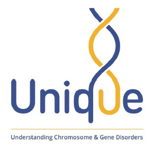

|
|
|

NONO-associated X-linked ID (intellectual disability) syndrome is a rare genetic condition that causes developmental delay and can affect a child’s learning abilities and behaviour. PDF: NONO-associated X-linked ID syndrome |
| Downloadable files |
|
Expanding the genetic and clinical spectrum of theNONO-associated X-linked intellectual disability syndrome |
|
X-linked syndromic mental retardation-34 is an X-linked recessive neurodevelopmental disordercharacterized ... |
Sources